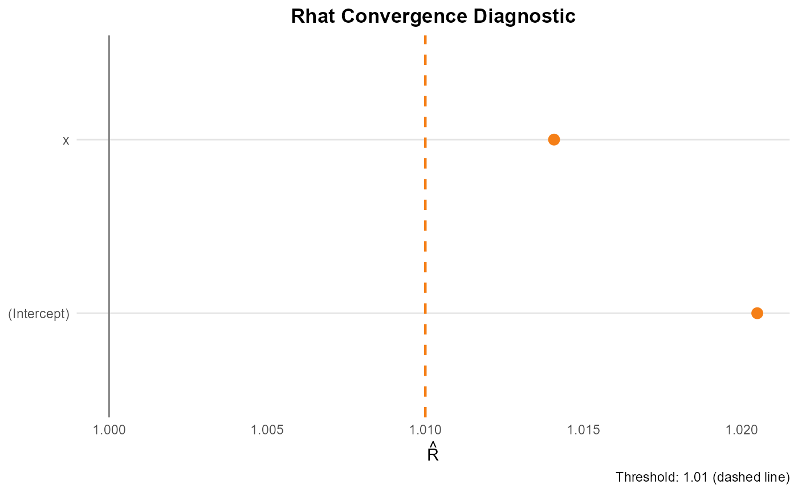
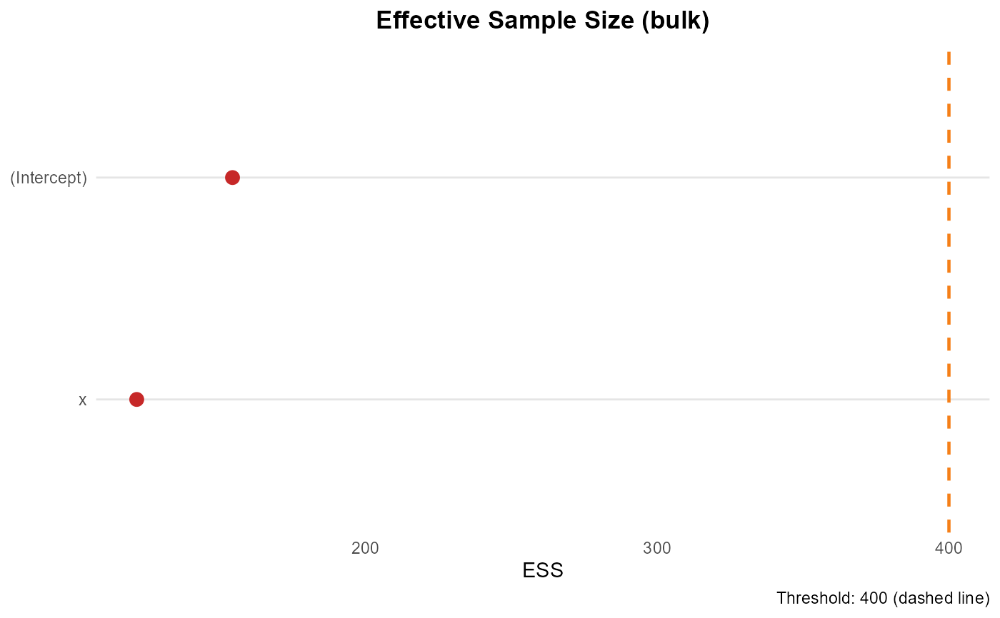
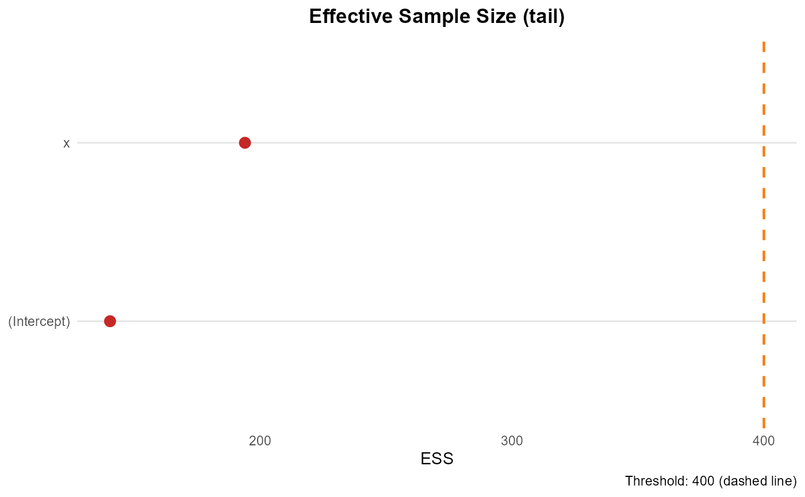
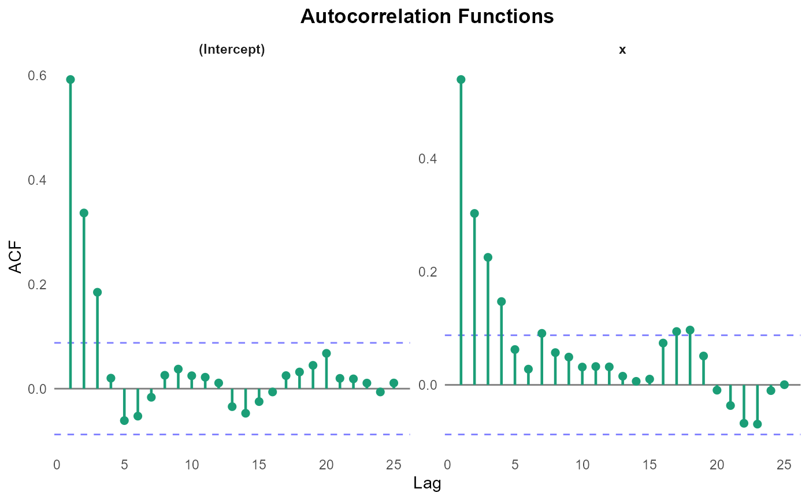
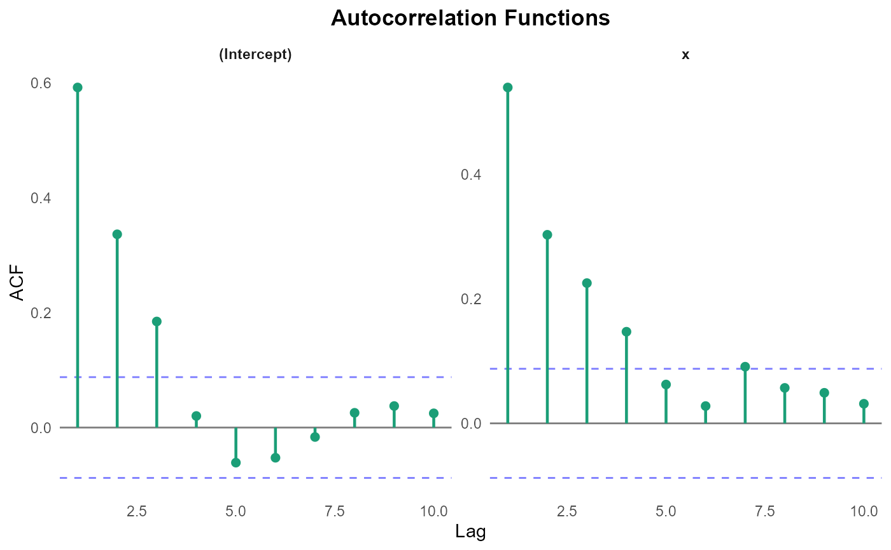
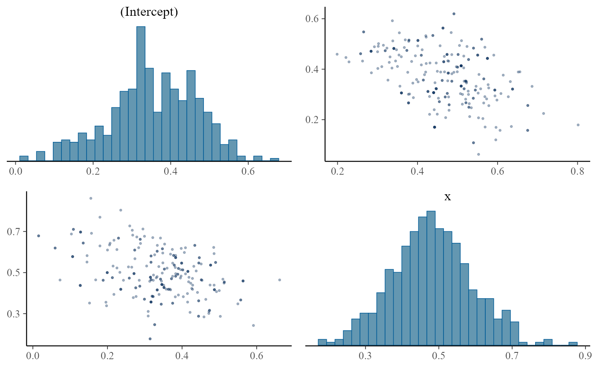
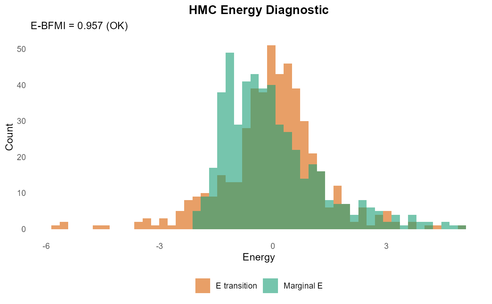

Plots of a sampled fit's convergence and exploration diagnostics:
plot_rhat(): Rhat values for all parameters, colour-coded to highlight convergence issues. Rhat values > 1.01 indicate potential convergence problems.plot_ess(): effective sample size (ESS) for all parameters, expressed as a ratio of ESS to total samples. Low ESS indicates high autocorrelation.plot_acf(): autocorrelation function (ACF) plots for selected parameters. High autocorrelation indicates slow mixing and low effective sample size.plot_pairs(): a pairs plot of the bivariate relationships between parameters. Divergent transitions (if present) are highlighted to help identify problematic posterior regions.plot_divergences(): parallel coordinates or scatter plots that highlight where in parameter space divergent transitions occur.plot_energy(): overlaid histograms of the marginal energy (centred within each chain) and the energy transition, along with the E-BFMI statistic. Low E-BFMI indicates poor exploration of the posterior.
Usage
plot_rhat(fit, threshold = 1.01, pars = NULL)
plot_ess(fit, type = c("bulk", "tail"), threshold = 400, pars = NULL)
plot_acf(fit, pars = NULL, lags = 25, n_pars = 6)
plot_pairs(
fit,
pars = NULL,
highlight_divergent = TRUE,
n_pars = 5,
alpha = 0.3
)
plot_divergences(fit, pars = NULL, type = c("parcoord", "scatter"))
plot_energy(fit)Arguments
- fit
A
tulpa_fitobject; an HMC fit forplot_divergences()andplot_energy().- threshold
plot_rhat(): Rhat threshold for warnings (default: 1.01).plot_ess(): minimum acceptable ESS (default: 400).- pars
Character vector of parameter names to include. If NULL (default): all main parameters, excluding high-dimensional RE/spatial ones (
plot_rhat()); the worst-mixing parameters by ESS (plot_acf()); the fixed effects followed by the hyperparameters (variance components, precisions, dispersions and correlations), up ton_pars(plot_pairs()); the hyperparameters on their sampled scale, filled up to six with the fixed effects (plot_divergences()). A latent field's per-unit values are never chosen by default.- type
plot_ess(): type of ESS, "bulk" (default) or "tail".plot_divergences(): plot type, "parcoord" (parallel coordinates, default) or "scatter".- lags
Maximum number of lags to compute (default: 25).
- n_pars
Maximum number of parameters to plot (default: 6 for
plot_acf(), 5 forplot_pairs()).- highlight_divergent
Logical; highlight divergent transitions in red (default: TRUE).
- alpha
Point transparency (default: 0.3).
Value
A ggplot object (if ggplot2, and for plot_pairs() GGally, is
available) or a base R plot (invisible).
Details
Rhat colour coding:
Green: Rhat < 1.01 (converged)
Yellow: 1.01 <= Rhat < 1.05 (borderline)
Red: Rhat >= 1.05 (not converged)
ESS/iter colour coding:
Green: ESS >= threshold
Yellow: threshold/2 <= ESS < threshold
Red: ESS < threshold/2
Ideal ACF plots show rapid decay to zero. Slow decay indicates high autocorrelation, which reduces effective sample size and may indicate poor mixing.
Pairs plots help identify:
Strong correlations between parameters (potential non-identifiability)
Multimodality
Regions where divergences cluster (indicating problematic geometry)
Divergent transitions indicate regions of high posterior curvature that the sampler cannot efficiently explore. Common causes:
Very narrow funnels (hierarchical models)
Strong correlations
Multi-modality
E-BFMI (Energy Bayesian Fraction of Missing Information) compares the distribution of energy levels to energy transitions. Values below 0.3 indicate the sampler may not be exploring the full posterior.
Examples
# \donttest{
set.seed(123)
df <- data.frame(x = rnorm(60))
df$y <- rpois(60, exp(0.5 + 0.3 * df$x))
fit <- tulpa(y ~ x, data = df, family = "poisson", mode = "hmc",
control = list(n_iter = 500L, warmup = 250L, n_chains = 2L,
seed = 1L))
plot_rhat(fit)

plot_ess(fit)

plot_ess(fit, type = "tail")

plot_acf(fit)

plot_acf(fit, lags = 10)

plot_pairs(fit)

plot_pairs(fit, n_pars = 2)
 plot_divergences(fit)
#> No divergent transitions to plot
plot_divergences(fit, type = "scatter")
#> No divergent transitions to plot
plot_energy(fit)
plot_divergences(fit)
#> No divergent transitions to plot
plot_divergences(fit, type = "scatter")
#> No divergent transitions to plot
plot_energy(fit)

# }